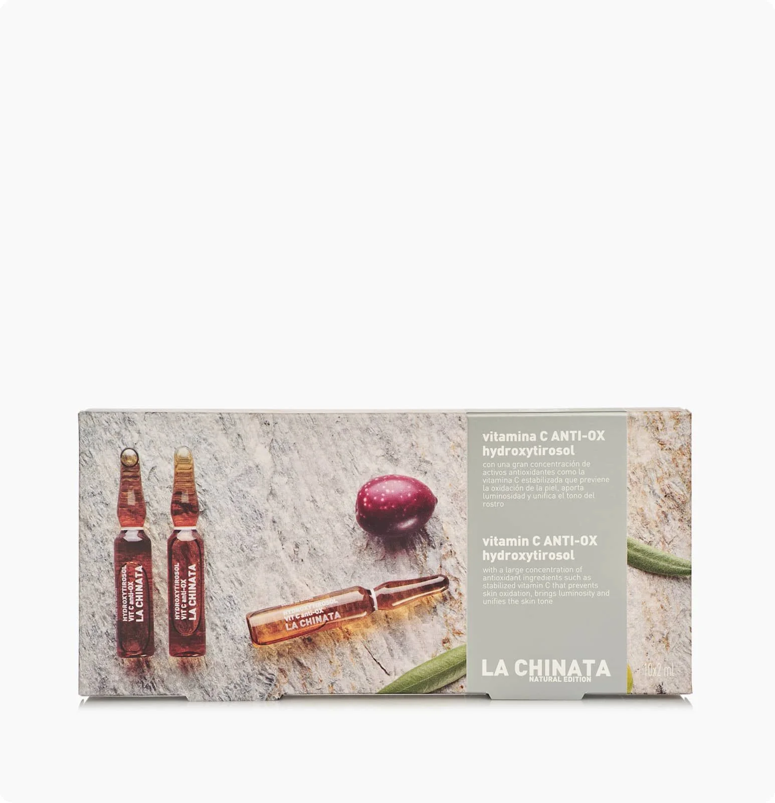

Cosmetic Made in Spain
首頁
聯繫我們
產品展示

LA CHINATA ANTI-OX WITH VITAMIN C AND HYDROXYTIROSOL AMPOULES
140.6 Kr
The anti-ox ampoules have a high concentration of antioxidant and moisturizing actives that act on the loss of skin firmness and on the lines of expression. They are enriched with stabilized Vitamin C, which prevents the oxidation of the skin, brings luminosity and unifies the tone of the face. They contain Hydroxytirosol as well, obtained from the olive tree, which increases the vitality of fibroblasts to increase the production of collagen and elastin. Besides, the olive leaf extract, which acts as an anti-inflammatory, anti-irritant and antioxidant, is present too; and they also include precursors of glycosaminoglycans and proteoglycans that act by reaffirming the skin, helping to eliminate wrinkles and the signs of aging.